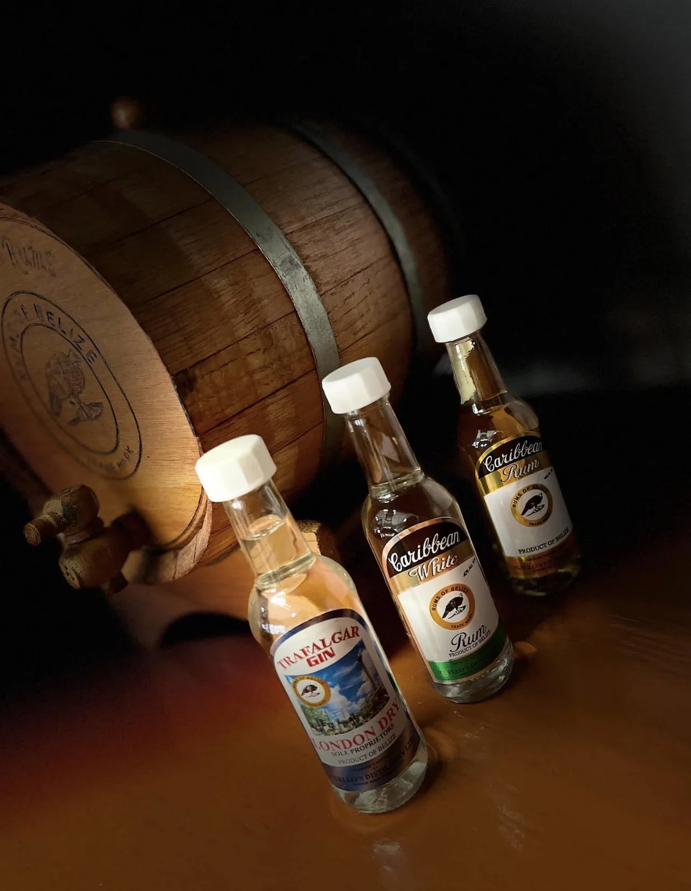
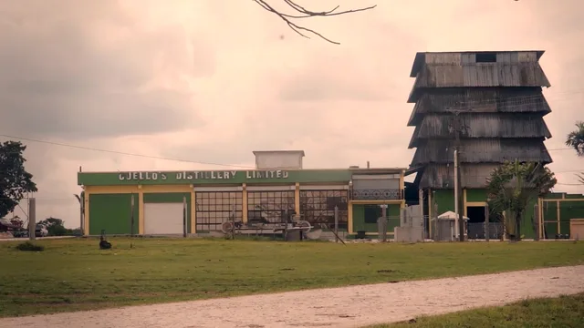
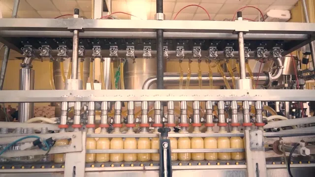
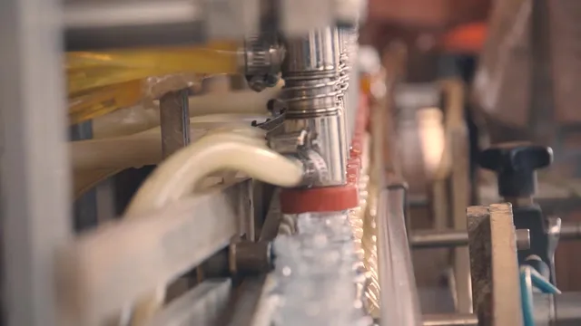
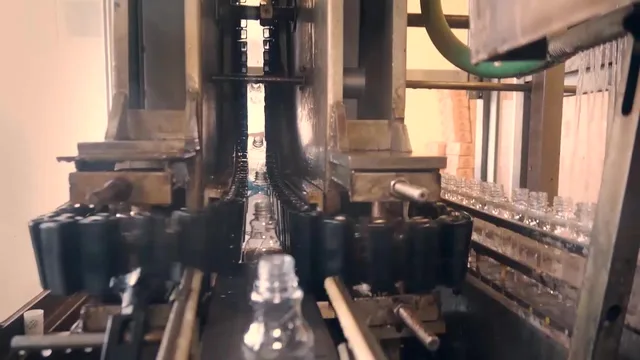

Our Story
From Orange Walk, with character
Cuello's Distillery Ltd. is a longstanding Belizean family company — a name built over generations on Main Street, Orange Walk Town, and carried across the country one bottle at a time.
Roots
A family, a town, a trade
Orange Walk is sugarcane country — the heartland of Belize's sugar industry. It is here, among cane fields and family businesses, that the Cuello name became tied to the craft of rum and spirits.
For generations, the distillery on Main Street has distilled, blended and bottled its spirits at home in Orange Walk Town — a tradition shaped by family, experience and an enduring commitment to quality.


The Trademark
The mark of the ocellated turkey
Every genuine Cuello's bottle carries the Rums of Belize trademark — the ocellated turkey, a bird found in the forests of northern Belize. It is a promise on the label: a product of Belize, from a Belizean family.
The Craft
Distilled, blended & bottled at home
From still to bottling line, Cuello's production happens in Orange Walk Town — the same address printed on every label.




Production imagery shown for general reference.
The Road So Far
Milestones in the making
Exact dates and milestones are being confirmed with the Cuello family for the final version of this page. The road, however, is easy to trace.
-
The beginning
A distillery takes root in Orange Walk
In the heart of sugarcane country, the Cuello family begins distilling and bottling spirits on Main Street.
-
Growth
A range Belize comes to know by name
Caribbean Rum, CZAR Vodka, Trafalgar Gin and more — the cabinet grows to nine spirits under the Rums of Belize trademark.
-
Across Belize
Orange Walk, Belize City, San Pedro
Offices open beyond Orange Walk, bringing Cuello's closer to customers on the coast and the cayes.
-
Today
Tradition meets a new generation
The same labels, the same town, a growing community — and a brand stepping confidently into its next chapter.
Tradition & Progress
Old roads, new travellers
Tradition is not standing still — it is knowing what to keep. Cuello's keeps its labels, its town and its standards, while embracing new ways to meet the people who enjoy its spirits: online, at events, and wherever Belize gathers.